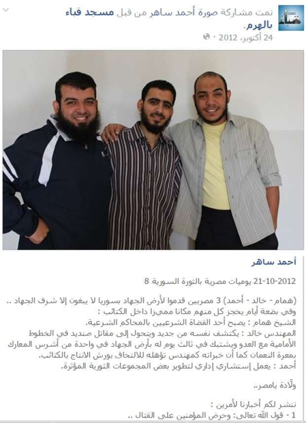
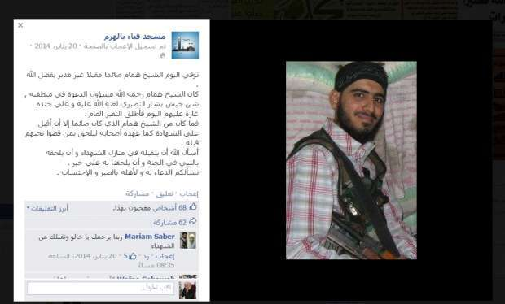
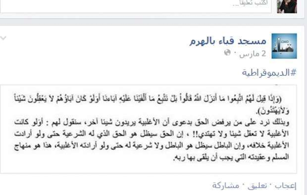
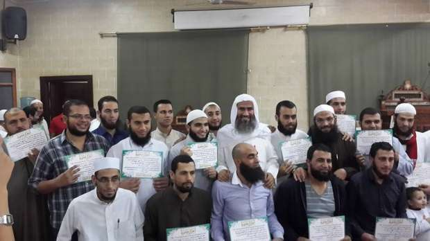
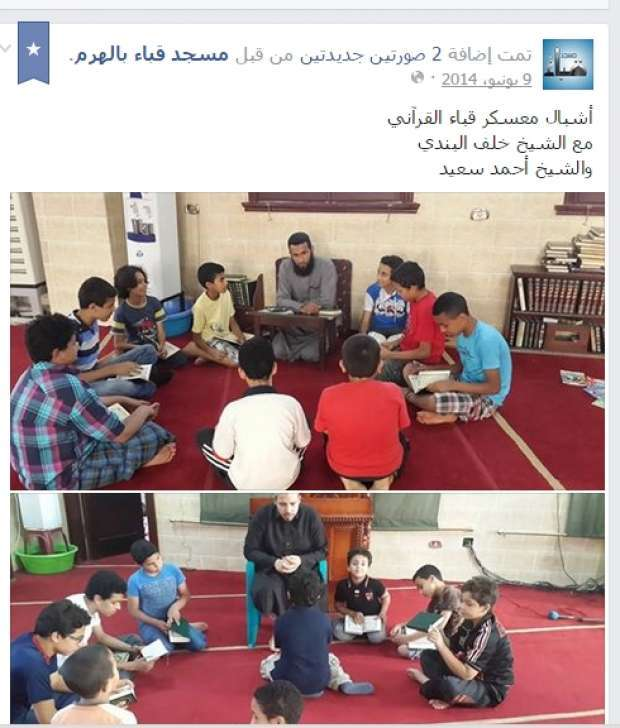

Latest NEWS
- Egypt's capital set to grow by half a million in 2017
- Egypt's wheat reserves to double with start of harvest -supply min
- Roundup of Egypt's press headlines on March 12, 2017
- Thomson Reuters Foundation announces closure of Aswat Masriya
- Roundup of Egypt's press headlines on March 11, 2017
- Two officers killed, four injured in an explosion in Al-Arish
- Roundup of Egypt's press headlines on March 10, 2017
- Colossus probably depicting Ramses II found in Egypt
Breading ground: Mosques, charities abused to spread IS ideology
Bali teaches a lesson in a mosque - Facebook
If you want to embrace the Islamic State's ideology, all you have to do is join one of those institutes tasked with preparing preachers that operate through non-governmental charities in Egypt, ultimately supervised by the ministry of social solidarity. These institutes spread the ideology of extremism and exclusion under a legal cover through courses that represent a "breeding ground" for Islamic State (IS) militants.
The courses are held at these charities or at mosques that belong to the endowments ministry, which cancelled licenses of the preachers institutes belonging to these organizations in 2015. Yet some of these institutes are still operating.
This investigation reveals how these institutes are working through an international network and how they mix between religion and politics and promote ideas such as prohibiting universities for allowing mixed-gender environments, banning watching television and inciting against Christians, Shiites and the rest of the community, in addition to promoting for armed groups fighting in Syria.
Despite that the ministry of social solidarity has shut down 1,083 outlawed organizations, there are still many institutes running under NGOs to prepare preachers without accountability or oversight by either the ministry of social solidarity or the endowments ministry or the interior ministry.
In the women’s part of Qebaa mosque in the district of Haram Giza governorate, a woman with insightful eyes, in her thirties, stood to inspect others who were, like her, dressed in black. Her gaze stopped at me, scrutinizing my fingertips. I took refuge in a corner to avoid her gaze but she followed to sit beside me, saluting me as a sort of cordiality. Then, she scrutinized my hands and my face a number of times but her gaze fixated on my long fingernails.
She asked me to trim my nails, considering long nails contradictory to Islamic teachings. The next day she brought a nail clipper to do the job herself as part of 'promoting virtue and preventing vice'
The lady took on the job to clip my nails so clumsily that she ruined them.
The incident was a clear indicator to the ideas I came to hear during my participation in religious courses for preacher Wahid Bali and his aides.
Two young men handle the announcement for these courses by distributing leaflets in front of the mosque. There are no pre-conditions for participation. Aswat Masriya monitored Bali's sessions since last year and attended three of them. Each of the courses were held for three days. The first was held in Qebaa Mosque in Haram, the second was in Fatah Mosque in Kafr al Sheikh in the Nile Delta while the third was an online streaming course on Bali's website, where he describes himself as a preacher of contemporary Islam.
In the women's section of Qebaa mosque, loud speakers were transmitting Bali's words and his aides could be heard participating in the course from the men’s section of the mosque.
Attending the course required spending the night at the mosque with about 50 attendees of women with ages ranging between 10-60 years, some of them foreigners who originally came to study at Al-Azhar University from Russia, Indonesia and Albania and they learnt about Bali's sessions through the ads.
During Kafr al-Sheikh's course, people neighbouring the mosque were speaking of Bali’s helpfulness to the locals.
The radical ideology was clear from the conversation of women in Qebaa mosque, most of them received average education and didn’t go to university out of the belief that it’s prohibited for being a mixed-gender environment.
The first day of the course normally starts with supplications after dawn prayers, followed by reading books for some Wahhabi Imams including Mohammed Ibn Abdul Wahab and Bin Othaimeen and some books were even written by Bali himself.
Bali printed books
Books of Takfeer
Bali teaches books and curricula approved by the endowments ministry but the same time he teaches his own books which do not follow Al-Azhar approach of teaching, according to scholars from, Al-Azhar.
In his introductory booklet, which explains activities of his own institute (Al-Fatah for Sharia Sciences), Bali wrote about adopting a moderate and scientific approach in the mechanisms and curricula of his institute and the adopted books. However, the majority of Sunni Scholars do not unanimously approve the books he uses. Some of these books were even criticized for being a “novelty” including “Al-Akaida al-Wasataya” by Ibn Taymiyyah and the “the book of the oneness of God” by Mohammed bin Abdul Wahab, according to Azhar scholars including Ahmed Karima the professor of Sharia.
Located on top of Qebaa Mosque, Al-Fatah for Sharia Sciences institute that belongs to the Association of Ansar al-Sunnah al-Muhammadeya, is considered a facade that Bali and his followers use to frequent mosques. The institute still operates despite the endowments ministry decision to cancel all previously issued licenses to establish and manage institutes for preparing preachers.
The decision banning institutes like that of Bali
LOOSE DEFINITION OF THE ENEMY
Bali continues to read books until 10 am, he then stops preaching for an hour to allow his followers to have breakfast. After noon prayers, his followers nap in the mosque until the call for afternoon’s prayers, after which he resumes preaching.
In between, the followers in the mosque repeat religious anthems calling for jihad including:
While there is no clear definition of “the enemy” that these songs are calling for Jihad against, some of the participants spoke of criminalizing the community and the media for allowing the ouster of former president Mohamed Mursi, who hailed from the Muslim Brotherhood group.
At the end of the course, participants were given an ‘Ijazah’, which is a signed approval by Bali for the participants to teach what they learnt during the courses to others. Some of these forms were even signed without specifying the name of the participants.
HATE SPEECH
Bali’s speech involves several extremist and exclusionary ideas, which he explicitly declared especially before the death of four Shia members including Shia leader Hassan Shehata in 2013. Bali has been calling for this act for years. Five months before the incident, Bali was featured in a video inciting to besiege the Shia and their followers.
While tracking Bali’s activities in December 2016, it turned out that that he was giving more of his courses through another NGO, Al-Tasneem w al-Salsabeel, supervised by the ministry of social solidarity.
Mona Mahmoud, an official at the NGO, said that the organisation is licensed by the ministry and that Bali concluded an agreement with the NGO to give courses and preach to others.
INTERNET USAGE
Born in 1963 in Kafr al-Sheikh, Bali describes himself on his online platforms as a contemporary Muslim preacher. He has an Arts and Education bachelor degree and was lectured by famous Wahhabi scholars including Ibn Baz, Bin Othaimeen and al-Albani.
Bali communicates through online platforms with leaders of transnational groupings. Those include leaders from Saudi Arabia, India, Afghanistan, and Kuwait, most important of whom is Salman al-Hosseiny al-Nadwy whose name is prominent on the Igazahs of Bali.
Through the Facebook page of Qebaa mosque, news of Egyptians who joined the ranks of the Islamic State (IS) in Syria as well as their missions there are posted. Bali’s followers used also to publish news on the page about training and lessons in the mosque.
In October 2012, the page posted news of three Egyptians who had arrived to Syria at the time. Ahmed, Hamam and Khaled joined the ranks of IS as an “administrative advisor”, a “judge at the Islamic courts” and a “fighter with engineering expertise”, respectively. Later, on Jan. 20, 2014, Hamam was declared dead on the page after a “strike by the army of Bashar” the Syrian president.

A post on Facebook page of Qebaa mosque about Egyptians who have joined armed groups in Syria

A post on the Facebook page of Qebaa mosque about killing of an Egyptian in the ranks of armed groups in Syria
When asked about Bali’s pages and his online supporters, a source from the interior ministry who requested to remain anonymous denied any knowledge of violations.
SUPPORTERS’ IDEAS
The extremist tone was evident in the comments posted by Bali’s followers on the page.
For example, one of Bali’s aides Adel al-Azazy posted on his Facebook page a view forbidding PlayStation games, saying they “sanctify the cross”. Comments by the page’s followers clearly illustrated support of Azazy’s view.
During the sessions,In Qeba Mosque, the transfer of ideas from Bali and his followers to supporters was apparent.
Maysa Mohamed*, one of Bali’s followers, held the view that watching television and “what it displays of forbidden images and scenes” must be prohibited.
Another follower, Somia Ameen*, said that going to university should be prohibited because it allows for the mixing of genders. She also talked about the prohibition of mother’s day celebrations.

Comments criticizing democracy on the mosque Facebook page
During the course sessions, the Qebaa mosque was awash in banners of the "Salafist preaching" with a political undertone. One of the banners went against the idea of democracy stating that “Those who dismiss rights based on the presumption that the majority wants something else, we tell them: what if the majority understands nothing! The right will remain a legitimate right even if the majority wants the contrary…This is the Muslim faith and way of life.”

Bali stands among some Igazah holders who attended his courses - a photo from Facebook page of Qebaa mosque
The reporter of Aswat Masriya attempted to contact Bali by phone for an interview regarding this report, but his son Soliman who is responsible for arranging the meetings said that Bali does not meet women and a man could conduct the interview instead. Further attempts to reach Bali was not answered.
PRACTICAL APPLICATION
After experiencing Bali’s workshops first-hand, the following step was to transfer the content of those workshops and the Ijazah to others. Three "courses" were delivered in three mosques supervised by the ministry of Endowments in different cities and villages.
The first experiment was conducted in Al-Rahma Mosque in Mohamadiyya village, Giza. After the noon prayers, the reporter asked the mosque attendant to make an announcement regarding a workshop on Doctrine. Without checking the identity of the reporter, the attendant asked for the women and children to gather and over two days the workshop was implemented and the Ijazahs awarded to the attendees.
The workshop featured readings from a book called “Introduction to Doctrine” authored by Bali. The participants included male and female students ranging from five to twelve years, who repeated the words after the instructor without comprehending the content or asking any questions.
None of the participants objected to the fact that both genders were separated, nor when they were warned against any mixing in the future. Young girls who were not wearing the veil were also scolded at.
The same experiment was conducted in two other mosques in Haram and Imbaba neighbourhoods in Giza.
POLITCAL BALANCING
Professor of doctrine and philosophy at Al-Azhar Ali al-Gadda says that the books used by Bali in his workshops “essentially differ from the doctrine of Azhar that believes in moderation.”
“The books that he uses take the Quranic text by face value, while Azhar adopts an interpretative approach,” Gadda added.
Sharia professor at Al-Azhar Ahmed Karima accused the Wahhabi current in Egypt of making IS militants, saying, “Qaeda, Taliban, IS…all emerged out of the Salafist cloak and Bali is one of its leaders in Egypt.”
Karima added that Bali and others who adopt the same methodology “receive funding from institutions based in Arab countries,” and stressed that Bali was not qualified to become a preacher nor did Azhar certify him.
“Salafism in Egypt is protected by political balancing between Egypt and the Gulf,” Karima said.
The Sharia professor said that Bali’s lessons aim to recruit young people; “60 per cent of the graduates of his courses are IS militants.”

Children in one of the sessions run by Bali aides
DENIED RESPONSIBILITY
Undersecretary of the Ministry of Endowments Tayea Gaber said that non-governmental organisations including Ansar al-Sunna, which Bali affiliates with, actually had cultural institutes that were shut down by the ministry of social solidarity.
When asked about Bali’s activities that take place at his head office above the mosque, Gaber said that the endowments ministry only oversees the courtyard of the mosque, but the mosque’s annexes are the property of charity organisations and fall under the oversight of the social solidarity ministry.
However, the lessons attended by the reporter of Aswat Masriya actually took place in the mosque’s courtyard.
The endowments minister issued decree no. 258/ 2015 revoking all licenses and protocols previously issued by the ministry to civil associations or charity organisations, according to Gaber.
Meanwhile, the chairman of the Central Administration of the civil associations and unions at the ministry of social solidarity Ayman Abdel Mawgood said that the Ansar al-Sunna association was not seized, and that it is registered with the ministry. The latest audit in 2015 indicated that the association’s activities were marked satisfactory.
Al-Tasneem and al-Salsabeel association where Bali also carries out his activities incorporates Quran learning activities and preparation courses for preachers as part of its main functions after the approval of the ministry of endowments, according to Abdel Mawgood.
Abdel Mawgood added that 1,083 associations with reported violations were dissolved or had their board of directors changed. Only 500 associations across the country remained to become under the oversight of the ministry of social solidarity.
Preacher institutes are not the responsibility of the social solidarity ministry, but the endowments ministry or al-Azhar, Abdel Mawgood said. Associations must go through certain procedures and apply to Al-Azhar for a permit in order to establish preachers institutes, according to NGO law 84/ 2002.
Meanwhile, Mohie al-Din Afify, General Secretary of Al-Azhar Observer denied Al-Azhar’s responsibility over the preachers institutes, saying that they fall under the supervision of the ministry of endowments.
“Azhar is a scientific institute concerned with Islamic matters,” Afify said. “what we offer to such institutes is restricted to academic curricula that are in line with Azhar’s doctrine.”
Afify added that teaching Wahhabi views was considered a violation, making the institute subject to closure by the ministry of endowments which is responsible for such action.
Meanwhile, the interior ministry denied responsibility in relation to supervision over mosques. A source from the ministry said that oversight on mosques and their annexes that include preachers institutes and charity associations fall under the ministry of endowment’s supervision, and not the interior ministry.
Another source from the information technology unit at the interior ministry said that the unit was not aware of Bali and none of his pages or his supporters’ pages on social media were previously spotted.
Amid denying the responsibility by the three ministries as well as Al-Azhar Observer, it is not odd to find such networks spreading their extremist and exclusionary ideas operating safely without prosecution or accountability.
*Pseudonyms
-This report was supported by the network of Arab Reporters for Investigative Journalism (ARIJ).


{kind=link}
facebook comments